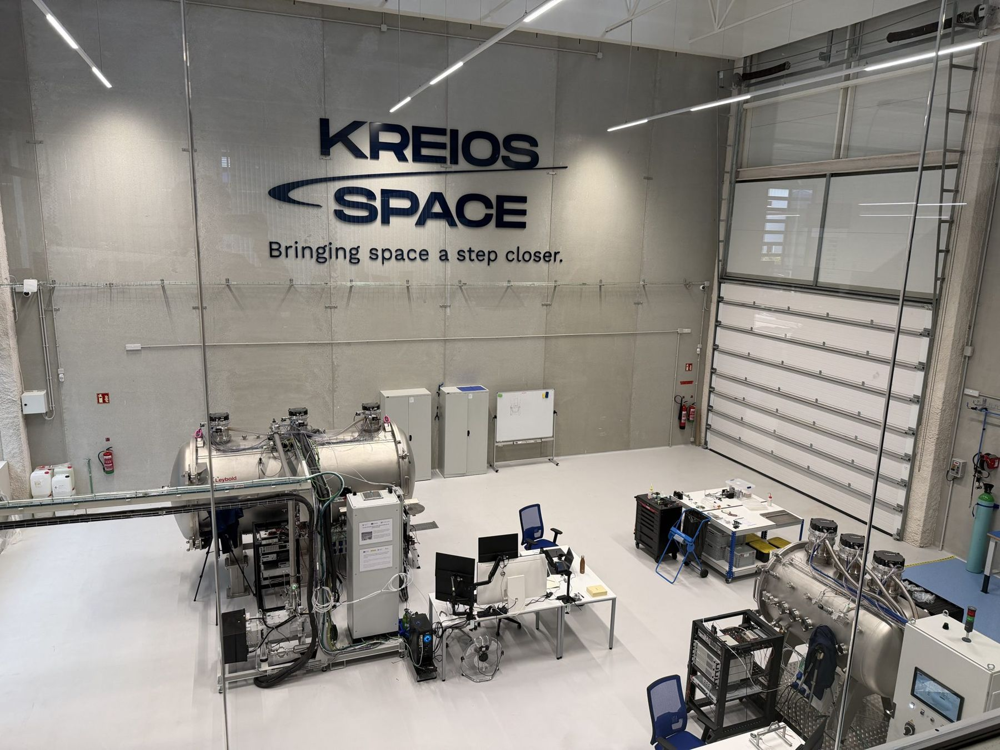
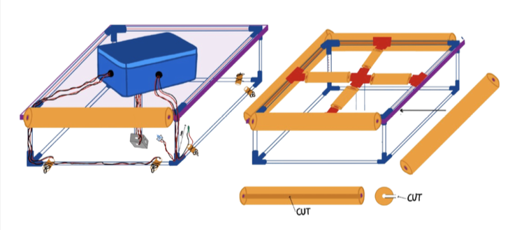

Making
Things built, tested, and designed for people.

The test hall
Kreios Space, summer 2026
Vacuum chambers, noble gases, machined aluminum
I designed and machined a gas flow panel and sensor supports for these chambers. Most of the work is confidential, so the room is all you see.
Read more
A robot that floated
Baby Beach, Dana Point, spring 2026
PVC, pool noodles, polyethylene, aluminum, a Teensy, six motors
It followed its path and logged every reading. The thermometer agreed with the sea. The pH sensor read about 4, in water expected between 6 and 9.
Read moreSensing an electron beam
NorthStar, 2026–
Sensors, a particle accelerator, FLUKA
An autonomous sensing system inside a particle accelerator.
A winch for a mine shaft
2025
Motorized winch, gas sensors, live video
A collapsible winch that lowers a sensor payload more than 600 feet, on a $400 budget.
Alumni and students
With Pomona College
Human-centered design
Designing meaningful connection between alumni and students across the Claremont Colleges.
People and animals
With The Salvation Army, Orange County, 2026–
Human-centered design
How connection with animals might support well-being, trust and purpose for people recovering from homelessness and addiction.